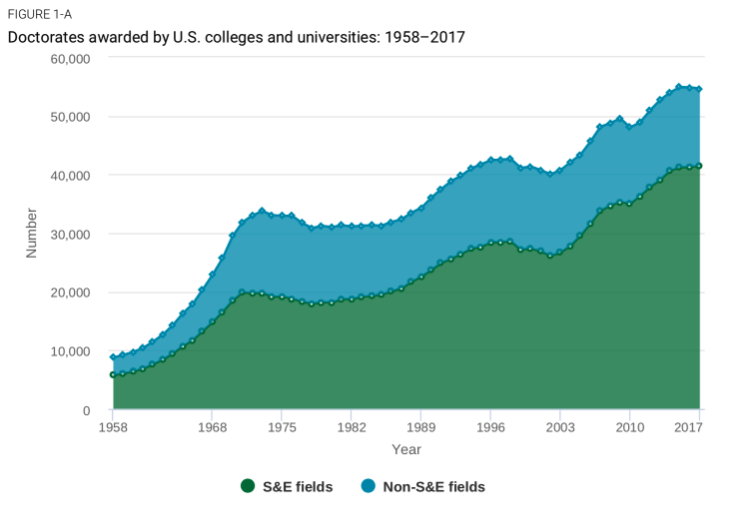

Explore career opportunities while pursuing your PhD. Why PhDs should explore the field of Data Science.
Only 0.45% of science PhDs that graduate every year will ever become professors. You better start looking for alternatives.
If you are attending a PhD programme, chances are you consider yourself quite smart. Most likely you are very dedicated and you possess the grit to go through an intense and challenging path… But do you really think you are part of the 0.45% 1?
The number of doctoral degree awarded has more than doubled since between 2000 and 2018. The academic job market that keeps shrinking and becoming more and more competitive, the opportunities for the “average” PhD, to carve their path to professorship is slimmer than ever.

Number of PhD graduates graduated in the US since 1958. S&E: Science and Engineering; Non-S&E: non STEM field 2 & 3.Professorship is a path that is not easily accessible to everyone
When I started in 2013, my dream was to become a professor. I dreamt about being at the forefront of scientific discovery and being able to mold new minds for the future. However, I realized that this was going to stay a dream. Don’t get me wrong, I loved my years as a PhD student. I was lucky enough to travel the world, produce some scientific content and train others. But I realized, half-way through, that I also wanted to affirm myself as a professional and grow in my career.
I realized that, despite the competition and the limited opened positions that are available every year, I didn’t want to travel from contract to contract every number of years, from post-doc to post-doc until one-day, maybe, I would have been lucky to find a tenure track position opened in some University in the middle of a country very far from home. I started late to explore what options were there to change my career path. I was fortunate enough to be able to find a new passion and build a career on top of that. The reality is that you have a lot of pros and cons in changing careers but I personally believe that this is something you should actively explore while completing your higher degree!
What are the advantages of an alternative career outside Academia after your PhD?
- The career progression is stable enough
- The professional development that you get from a specific sector or company can be sold easily to another company, thus making you more appealing in the job market
- This was a big part for me. Once you start a job, you can start to become an adult… For example you can afford to ask for a mortgage!
- You can chose a job that brings you around the world (hello consultants!). But you don’t have to! You can chose to stay in one place and maybe start building your family
I was lucky to find myself in a position where I could learn the basics and from there I fell in love with programming and manipulating data. It was like going back to the lab, tinkering with flasks and batches and testing out hypothesis and getting results that either proved or confuted the initial assumptions.
I think that the field of Data Science has a number of advantages. At the same time, these jobs are now in high demand which make the job market more receptive for new people entering the filed.
Why both STEM and non STEM PhDs can succeed in Data Science
The basic assumptions that hold true for being a successful PhD are the same in Data Science. For me, the Data Science process is like the process I was doing while in Grad school:
- Understanding the data and the field in which you are operating
- Evaluate the limitations and the edge cases, and set up a controlled system for experimenting
- Forming assumptions and hypothesis
- Find a way to test the hypothesis and generate Insights and recommendations
If you wrote a review and or a scientific paper, you will find that the mental process is thus very similar.
The field of DS is evolving rapidly and constantly. This give us the chance to continuously learn and find our own niche in the field. Again, a process very similar to Academia.
Personally, I also fell in love with the ability to create from scratch using programming languages. Once realized that, by using lines of codes, you can build theoretically whatever you want from a website to an entire business, it has been a one-way ticket to programming geek.
If you love the scientific process of learning by hypothesis testing and experimentation and you are an avid and constant learner, I believe that the field of Data Science could open you its doors and you can find yourself successful in this career. Data Science or not, have you started exploring the alternatives that you have outside Academia?
It is not because things are difficult that we do not dare; it is because we do not dare that things are difficult.. L.A. Seneca